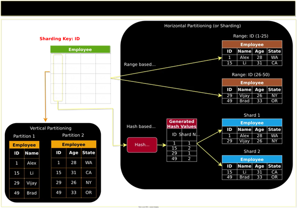
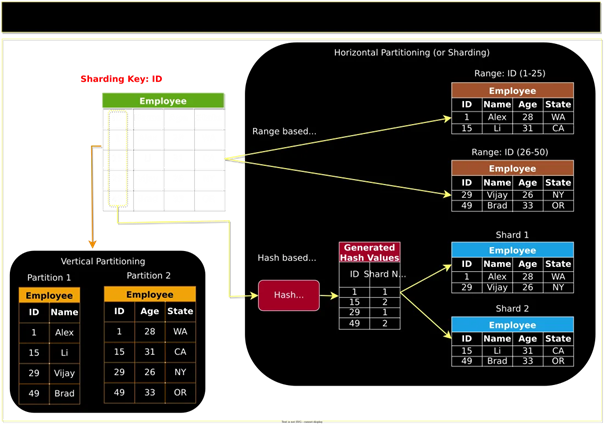
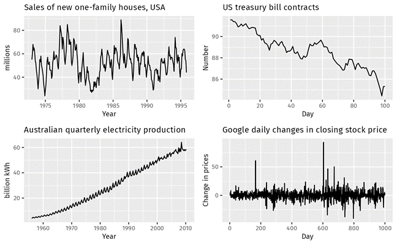
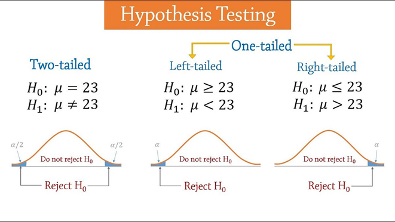
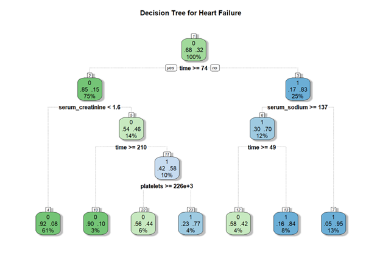
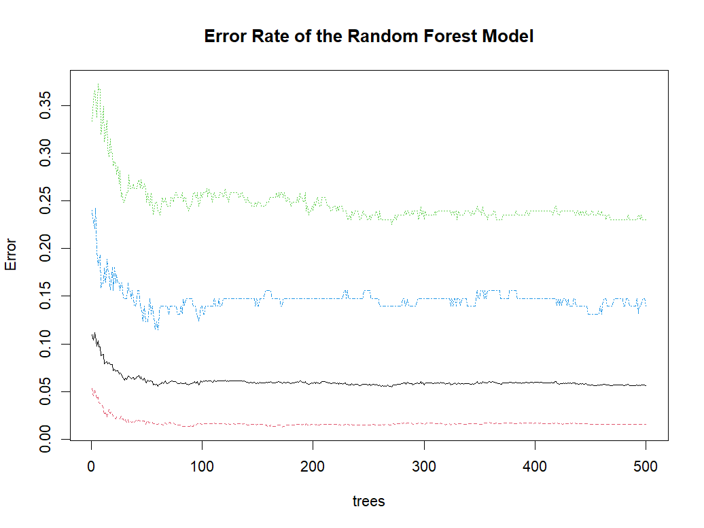

Predictive modeling and machine learning enable the transformation of raw data into actionable insights, empowering businesses to forecast trends, optimize operations, and make data-driven decisions with unprecedented accuracy.
 

Data preparation for machine learning in R involves collecting, cleaning, transforming, splitting, visualizing data, and selecting relevant features to ensure high-quality input for robust model development..

Time series modeling principles involve analyzing sequential data points to identify patterns, trends, and seasonalities, enabling accurate forecasting and understanding of temporal dynamics.
Basic to advanced data analysis encompasses a spectrum from simple descriptive statistics and data visualization to complex inferential statistics, predictive modeling, and machine learning techniques for deriving deep insights from data..

Hypothesis testing is a statistical method used to make inferences or draw conclusions about a population based on sample data, by determining whether there is enough evidence to reject a null hypothesis in favor of an alternative hypothesis..

Machine learning for classification involves training algorithms to categorize data into predefined classes or labels, enabling tasks such as spam detection, image recognition, and medical diagnosis..

Machine learning for regression focuses on predicting continuous numeric values by learning the relationship between input features and the target variable, enabling applications like price prediction, trend analysis, and risk assessment..